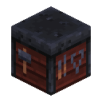

行业建设度
行业建设度按九个行业记录有效建设、生产和游玩活动，并在每日结算后计算行业繁荣度。
行业

有效活动按九个行业累计。个人建设度用于贡献值奖励，服务器行业建设度在每日结算后用于繁荣度计算。
| 行业 | 主要来源 |
|---|---|
| 土建园林 | 放置与合成建筑材料、装饰方块 |
| 采矿冶金 | 挖掘矿石、熔炉矿物产物、冶炼 |
| 能源化工 | 熔炉化工产物、相关合成 |
| 加工制造 | 合成器产物、锻造、铁砧、加工类合成 |
| 科技魔法 | 附魔、红石与科技类合成 |
| 农林牧渔 | 繁殖、驯服、剪毛、挤奶、钓鱼、农牧合成 |
| 军工食药 | 敌对生物击杀、酿造、食物与药品 |
| 流通服务 | 村民交易及八类交通距离 |
| 文教民生 | 书籍、告示牌、民生类方块与物品 |
每个行业维护当日建设度、已结算总建设度、长期指数移动平均、近期指数移动平均与繁荣度。
行业标识符
| 行业 | 稳定标识符 |
|---|---|
| 土建园林 | construction_landscaping |
| 采矿冶金 | mining_metallurgy |
| 能源化工 | energy_chemical |
| 加工制造 | processing_manufacturing |
| 科技魔法 | technology_magic |
| 农林牧渔 | agriculture_forestry_livestock_fishery |
| 军工食药 | military_food_medicine |
| 流通服务 | circulation_services |
| 文教民生 | culture_education_livelihood |
统计服务器与游戏模式
- 只有配置
statisticsServers列出的服务器采集统计，默认只有survival；其他服务器不采集。 - 群组服所有统计服务器连接同一个 MySQL，同一玩家在不同统计服务器产生的数据汇总到同一账户。
- 玩家行业建设度只接受生存或冒险模式下产生的行为。
- 原始放置、挖掘次数也记录创造模式的成功操作。
- 机器生产计入服务器建设度；明确归属玩家的活动同时累计个人建设度。
玩家活动
玩家直接操作通过标签匹配行业。同一个动作下，一个对象最多属于一个行业；重复配置会让整份候选规则被拒绝。
| 标签 | 注册表 | 有效计数口径 |
|---|---|---|
craft_<行业>.json | 物品 | 实际转移到玩家的合成产物，同玩家同业累计每 64 个计 1 点，包括快捷移动键点击与快捷交换 |
place_<行业>.json | 方块 | 玩家成功放置操作，每次 1 |
mine_<行业>.json | 方块 | 玩家成功挖掘操作，每次 1 |
use_<行业>.json | 物品 | 完成食用、饮用的实际消耗数量，以及可明确归属玩家的实际耐久损失 |
interact_<行业>.json | 方块 | 服务端交互后方块状态改变或手持物品数量减少，每次 1 |
craft/place/mine共 27 个标签只统计玩家直接操作，不用于自动合成器、机器、爆炸或环境变化。use/interact另有 18 个标签，空标签合法。- 默认物品使用来源包含食物、饮品、武器、防具、采掘工具、农具等；默认方块交互来源包含堆肥桶、浆果、蜂巢、耕作地表、炼药锅、音符盒及唱片机等。
- 打开界面不计入交互；方块交互默认排除持有
BlockItem的路径，避免同一次放置被重复计为交互。 place/mine按实际方块标识符匹配，不按物品标识符匹配；火把与墙上火把等不同方块类型分别列入。- 玩家合成按同玩家、同行业累计产物数，默认每 64 个计 1 点；不同产物可合计，余量跨批次、核算日、重启与跨服保留。放置与挖掘按成功操作次数计量。
交通距离
- 交通统计采用原版服务端移动增量，按玩家当前的滑翔或乘坐状态分类。
- 单次增量超过 16 格时作为异常跳变丢弃；创造与旁观模式不计。
- 厘米增量转换为百万分之一格的整数进入批次。按「玩家唯一标识符 + 移动方式」保存余数，跨日、离线、重启和跨服继续累计。
- 数据库事务对余数行加锁，把余数更新、服务器建设度、个人行业建设度和批次幂等标记一起提交。
- 重载改变距离单位后，尚未折算的真实距离按新单位换算，不清空余数。
核算日与每日结算
主服务器以主世界游戏时钟划分核算日：d=max(0,⌊(T-2000)/24000⌋)，正常核算区间为每天 8:00 至次日 8:00。游戏内睡眠跳时不会错过 8:00 边界；首次安装所在的区间视为不完整日，建设度与累计总量照常保留，但不用于指数移动平均初始化；安装前的历史游戏日不补造零值记录。
- 主服务器到达新核算日后发布该日规则。
- 其他统计服务器每 100 游戏刻查询一次主服发布的核算日，不使用各自世界时间决定日期。
- 子服观察到切日后短暂停止采集，先提交旧批次再切换；跨服观察切日最多约 5 秒加数据库延迟的同步窗口。
- 主服务器必须等待所有指定统计服务器确认旧日提交完毕，才结算旧日。未在线或未恢复的统计服务器会阻止结算，不被当作零建设度。
- 结算按日顺序追赶，以任务表唯一键和行锁保证重复启动不会重算。一日内九个行业的每日快照、总量、指数移动平均、繁荣度与任务成功状态在同一事务中提交。
- 正常结算从 8 点开始，失败重试与历史追赶只在 8:00—18:00 的安全窗口运行；日常事件采集不受该窗口限制。
定义 n 为按事件单位大小换算后的有效单位数、u 为单位建设度，则当日增量 Δ Dd=nu。不设置每日建设度上限；累计值采用 0 至 263-1 的非负整数，达到存储上限时饱和于最大值，不回绕、也不会取消已经成功的游戏操作。
繁荣度公式
记 xt 为第 t 个完整核算日的行业建设度、Lt 为长期日建设度指数移动平均、Rt 为近期日建设度指数移动平均、Pt 为繁荣度。第一个完整日只保存建设度，指数移动平均为 NULL，繁荣度显示为 0。第二个完整日结束后初始化：
两日均为 0 时也正常初始化。自第三个完整日起：
先更新指数移动平均，再计算繁荣度：
- 初始化两日均零时繁荣度为0，每天稳定建设也为0；分母加一只避免除零，建设减少仍为负。
- 任一完整日的零值都参与后续计算。
- 数据库使用
DECIMAL(30,8)，Java 使用BigDecimal，中间指数移动平均与除法以 8 位小数四舍五入。
管理与数据
游戏事件映射
游戏事件在生产或动作完成时记录有效数量，并按对应事件的计量单位换算建设度。交通默认每 10 格计 1 点，其他事件的单位值和单位大小见服务器事件映射。管理员可通过数据包调整已有事件的行业、单位建设度 unit_value 和单位大小 unit_size。
| 来源 | 完成时机与归属 | 默认行业 |
|---|---|---|
| 熔炉 / 高炉 / 烟熏炉 | 输出槽实际增加产物后；独立产物标签区分矿物、化工、建筑材料和食物，只增加服务器建设度 | 采矿冶金 / 能源化工 / 加工制造 / 军工食药 |
| 合成器 | 配方成功生成产物后，只增加服务器建设度 | 加工制造 |
| 繁殖、驯服、治愈 | 成功完成动作，能明确关联玩家时同时增加个人与服务器建设度 | 农林牧渔 / 军工食药 |
| 剪毛、挤奶、钓鱼 | 实际产物生成；不以普通拾取作为来源 | 农林牧渔 |
| 敌对生物击杀 | 生存或冒险玩家完成击杀；按原版 MONSTER 分类，环境死亡不计 | 军工食药 |
| 村民交易 | 输入扣除、交易完成后计一次，不按打开界面或选择条目计数 | 流通服务 |
| 锻造、铁砧、附魔、酿造 | 成功取出修改结果、附魔成功或酿造完成；没有明确玩家的自动生产只计服务器 | 加工制造 / 科技魔法 / 军工食药 |
| 交通距离 | 鞘翅、马、船、矿车、猪、炽足兽、快乐恶魂和鹦鹉螺八类有效移动 | 流通服务 |
采集范围
采集依据实际完成的生产或操作结果。普通步行、在线时长、普通拾取、自然生长、机器空转和容器存取不产生该类建设度。事件标识符与计量类型须对应已有适配器。
方块操作与交互去重
一次放置、挖掘无论影响多少方块位置都按一次操作统计，门和床等不会按部件数量累计。原始玩家放置、挖掘次数不受去重影响，但行业建设度会受影响。
去重键为 K=(s,d,u,a,x,y,z,b)，其中 s 为子服、d 为维度、u 为玩家唯一标识符、a 为放置/挖掘/交互、(x,y,z) 为本次操作的目标锚点、b 为方块注册标识符。不比较朝向、开关、含水等方块状态；不同动作独立去重；多方块操作只报一个锚点事件。
若 t 为当前游戏刻、tK 为同键上次成功操作游戏刻，则只有首次出现或满足 t-tK≥ 20 时才增加行业建设度。
- 被去重的操作仍会更新上次观察时间，所以连续快速往返操作不会每秒自动获得一次分数。
- 交互还必须先通过结果检查（方块状态改变或手持物品数量减少）。
- 服务器与个人行业累计使用同一个去重结果。
- 缓存只在本服内存保留，每 20 游戏刻清理过期项，最多 50,000 个键；重启不恢复一秒内的缓存。
标签数据
标签成员数量与审核来源
下表统计当前资源中各行业标签包含的注册项数量，帮助判断某个行业实际覆盖哪些玩法。空标签表示该动作在当前版本没有对应定义，完整注册项见资源中的 all_items.json、all_blocks.json。
| 行业 | 合成 craft | 放置 place | 挖掘 mine | 使用 use | 交互 interact |
|---|---|---|---|---|---|
| 土建园林 | 0 | 779 | 763 | 0 | 0 |
| 采矿冶金 | 0 | 2 | 87 | 21 | 0 |
| 能源化工 | 42 | 3 | 11 | 0 | 4 |
| 加工制造 | 809 | 10 | 0 | 0 | 0 |
| 科技魔法 | 38 | 107 | 8 | 0 | 0 |
| 农林牧渔 | 3 | 57 | 237 | 9 | 10 |
| 军工食药 | 94 | 5 | 5 | 77 | 0 |
| 流通服务 | 37 | 37 | 18 | 0 | 0 |
| 文教民生 | 42 | 206 | 0 | 0 | 3 |
- 另有
process_furnace_mineral(9)、process_furnace_chemical(4)、process_furnace_material(4)、process_furnace_food(9) 四个熔炉产物分类标签，只用于机器生产，不再在取出时重复计数。 - 可逆合成排除表中的 37 个物品禁止写入
craft标签，启动和重载时都会校验。运行时清单为data/contribution/contribution/reversible_craft_exclusions.json，中文审核表见design/definitions/可逆合成排除表.csv。 - 中文审核表（游戏事件映射、合成、放置、挖掘、可逆合成排除）位于
design/definitions/，模组运行时不读取，仅供人工审核。
规则配置
主服执行原版 /reload 后解析标签与事件映射，构造不可变的成员快照。跨行业重复对象、未知行业、非法事件、非正整数和可逆 craft 产物都会拒绝整份候选配置，旧配置继续生效；合格候选在下一游戏日 8 点发布，重载不会立刻改变当日行业匹配。
- 数据库的
contribution_rule_snapshot按SHA-256保存去重后的规则数据定义；contribution_rule_epoch保存核算日到规则哈希的对应关系。 - 子服直接使用主服发布的规则快照，不按自己的数据包私自改变行业规则。
- 启动时加载历史快照，保证旧统计日志仍按原规则重放。
- 当前
config_version=1表示规则结构版本，具体业务规则身份以config_hash和核算日为准。